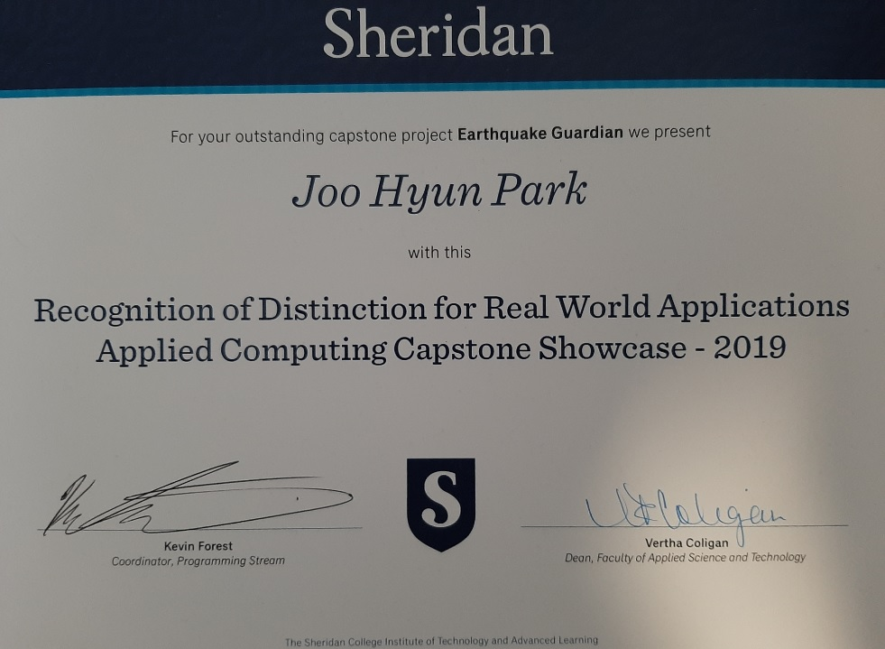

EarthQuake Guardian
Top 5 Capstone Project
Co-developed a powerful mobile application called “Earthquake Guardian” which was main capstone project in school, where first responder to efficiently rescue the victims by using mesh network technology in earthquake zone. Awarded Top 5 capstone project in Mobile computing program at Sheridan college. Check out the in-depth report or explore the code through bitbucket link!
